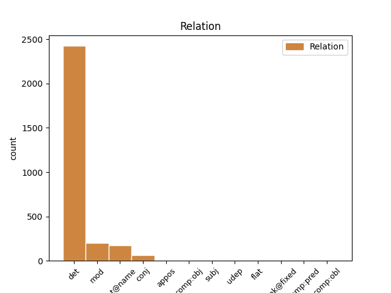
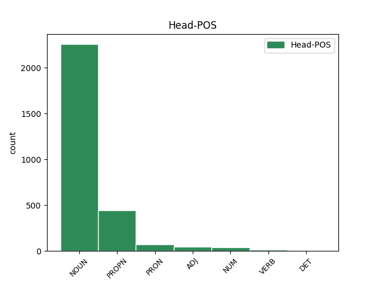
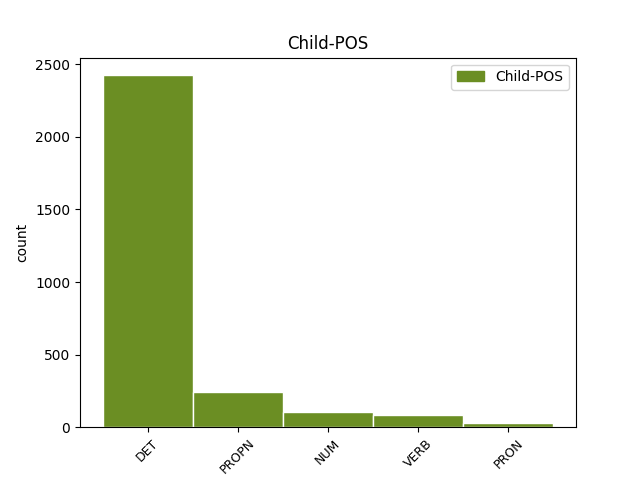

Distribution of features within this leaf



Agreement Rules sorted by frequency.
When the dependent token is None
1 Segundo _ _ _ _ 0 _ _ _
2 Cagiao _ _ _ _ 0 _ _ _
3 , _ _ _ _ 0 _ _ _
4 isto _ _ _ _ 0 _ _ _
5 foi _ _ _ _ 0 _ _ _
6 o _ _ _ _ 0 _ _ _
7 que _ _ _ _ 0 _ _ _
8 dificultou _ _ _ _ 0 _ _ _
9 os _ _ _ _ 0 _ _ _
10 que _ _ _ _ 0 _ _ _
11 ían _ _ _ _ 0 _ _ _
12 ser _ _ _ _ 0 _ _ _
13 derradeiros _ _ _ _ 0 _ _ _
14 pasos _ _ _ _ 0 _ _ _
15 de _ _ _ _ 0 _ _ _
16 a _ _ _ _ 0 _ _ _
17 regulación _ _ _ _ 0 _ _ _
18 laboral _ _ _ _ 0 _ _ _
19 de _ _ _ _ 0 _ _ _
20 as _ _ _ _ 0 _ _ _
21 antigas _ _ _ _ 0 _ _ _
22 Astano _ _ _ _ 0 _ _ _
23 e _ _ _ _ 0 _ _ _
24 Bazán _ _ _ _ 0 _ _ _
25 , _ _ _ _ 0 _ _ _
26 denominada _ _ _ _ 0 _ _ _
27 Navantia _ _ _ _ 0 _ _ _
28 dende _ _ _ _ 0 _ _ _
29 esta este DET Edfs Gender=Fem|Number=Sing|PronType=Dem 30 det _ _
30 semana semana NOUN Scfs Gender=Fem|Number=Sing 0 _ _ _
31 . _ _ _ _ 0 _ _ _
When the dependent token is None
1 Segundo _ _ _ _ 0 _ _ _
2 Cagiao _ _ _ _ 0 _ _ _
3 , _ _ _ _ 0 _ _ _
4 isto _ _ _ _ 0 _ _ _
5 foi _ _ _ _ 0 _ _ _
6 o _ _ _ _ 0 _ _ _
7 que _ _ _ _ 0 _ _ _
8 dificultou _ _ _ _ 0 _ _ _
9 os _ _ _ _ 0 _ _ _
10 que _ _ _ _ 0 _ _ _
11 ían _ _ _ _ 0 _ _ _
12 ser _ _ _ _ 0 _ _ _
13 derradeiros _ _ _ _ 0 _ _ _
14 pasos _ _ _ _ 0 _ _ _
15 de _ _ _ _ 0 _ _ _
16 a _ _ _ _ 0 _ _ _
17 regulación regulación NOUN Scfs Gender=Fem|Number=Sing 0 _ _ _
18 laboral laboral ADJ A0fs Gender=Fem|Number=Sing 17 mod _ _
19 de _ _ _ _ 0 _ _ _
20 as _ _ _ _ 0 _ _ _
21 antigas _ _ _ _ 0 _ _ _
22 Astano _ _ _ _ 0 _ _ _
23 e _ _ _ _ 0 _ _ _
24 Bazán _ _ _ _ 0 _ _ _
25 , _ _ _ _ 0 _ _ _
26 denominada _ _ _ _ 0 _ _ _
27 Navantia _ _ _ _ 0 _ _ _
28 dende _ _ _ _ 0 _ _ _
29 esta _ _ _ _ 0 _ _ _
30 semana _ _ _ _ 0 _ _ _
31 . _ _ _ _ 0 _ _ _
When the dependent token is None
1 Emilio emilio PROPN Spm0 Gender=Masc 0 _ _ _
2 Cagiao cagiao PROPN Spm0 Gender=Masc 1 flat@name _ SpaceAfter=No
3 , _ _ _ _ 0 _ _ _
4 secretario _ _ _ _ 0 _ _ _
5 de _ _ _ _ 0 _ _ _
6 a _ _ _ _ 0 _ _ _
7 CIG _ _ _ _ 0 _ _ _
8 en _ _ _ _ 0 _ _ _
9 Ferrol _ _ _ _ 0 _ _ _
10 , _ _ _ _ 0 _ _ _
11 di _ _ _ _ 0 _ _ _
12 que _ _ _ _ 0 _ _ _
13 " _ _ _ _ 0 _ _ _
14 e _ _ _ _ 0 _ _ _
15 unha _ _ _ _ 0 _ _ _
16 verdadeira _ _ _ _ 0 _ _ _
17 vergonza _ _ _ _ 0 _ _ _
18 que _ _ _ _ 0 _ _ _
19 se _ _ _ _ 0 _ _ _
20 estea _ _ _ _ 0 _ _ _
21 xogando _ _ _ _ 0 _ _ _
22 con _ _ _ _ 0 _ _ _
23 os _ _ _ _ 0 _ _ _
24 traballadores _ _ _ _ 0 _ _ _
25 por _ _ _ _ 0 _ _ _
26 non _ _ _ _ 0 _ _ _
27 dar _ _ _ _ 0 _ _ _
28 lle _ _ _ _ 0 _ _ _
29 solución _ _ _ _ 0 _ _ _
30 a _ _ _ _ 0 _ _ _
31 o _ _ _ _ 0 _ _ _
32 que _ _ _ _ 0 _ _ _
33 eles _ _ _ _ 0 _ _ _
34 chaman _ _ _ _ 0 _ _ _
35 " _ _ _ _ 0 _ _ _
36 flecos _ _ _ _ 0 _ _ _
37 " _ _ _ _ 0 _ _ _
38 , _ _ _ _ 0 _ _ _
39 cando _ _ _ _ 0 _ _ _
40 a _ _ _ _ 0 _ _ _
41 verdadeira _ _ _ _ 0 _ _ _
42 realidade _ _ _ _ 0 _ _ _
43 é _ _ _ _ 0 _ _ _
44 por _ _ _ _ 0 _ _ _
45 que _ _ _ _ 0 _ _ _
46 os _ _ _ _ 0 _ _ _
47 de _ _ _ _ 0 _ _ _
48 Comisións _ _ _ _ 0 _ _ _
49 queren _ _ _ _ 0 _ _ _
50 prexubilar _ _ _ _ 0 _ _ _
51 tamén _ _ _ _ 0 _ _ _
52 algúns _ _ _ _ 0 _ _ _
53 traballadores _ _ _ _ 0 _ _ _
54 de _ _ _ _ 0 _ _ _
55 as _ _ _ _ 0 _ _ _
56 compañias _ _ _ _ 0 _ _ _
57 auxiliares _ _ _ _ 0 _ _ _
58 con _ _ _ _ 0 _ _ _
59 o _ _ _ _ 0 _ _ _
60 pretexto _ _ _ _ 0 _ _ _
61 de _ _ _ _ 0 _ _ _
62 que _ _ _ _ 0 _ _ _
63 poden _ _ _ _ 0 _ _ _
64 ter _ _ _ _ 0 _ _ _
65 garantía _ _ _ _ 0 _ _ _
66 de _ _ _ _ 0 _ _ _
67 emprego _ _ _ _ 0 _ _ _
68 . _ _ _ _ 0 _ _ _
When the dependent token is None
1 De _ _ _ _ 0 _ _ _
2 dar _ _ _ _ 0 _ _ _
3 se _ _ _ _ 0 _ _ _
4 esa _ _ _ _ 0 _ _ _
5 prexubilación _ _ _ _ 0 _ _ _
6 por _ _ _ _ 0 _ _ _
7 la _ _ _ _ 0 _ _ _
8 SEPI _ _ _ _ 0 _ _ _
9 , _ _ _ _ 0 _ _ _
10 tería _ _ _ _ 0 _ _ _
11 que _ _ _ _ 0 _ _ _
12 ser _ _ _ _ 0 _ _ _
13 mediante _ _ _ _ 0 _ _ _
14 un _ _ _ _ 0 _ _ _
15 expediente _ _ _ _ 0 _ _ _
16 aberto _ _ _ _ 0 _ _ _
17 a _ _ _ _ 0 _ _ _
18 todos _ _ _ _ 0 _ _ _
19 os _ _ _ _ 0 _ _ _
20 que _ _ _ _ 0 _ _ _
21 cumpran _ _ _ _ 0 _ _ _
22 52 52 NUM Ncdmp Gender=Masc|Number=Plur|NumType=Card 23 mod _ _
23 anos ano NOUN Scmp Gender=Masc|Number=Plur 0 _ _ _
24 e _ _ _ _ 0 _ _ _
25 con _ _ _ _ 0 _ _ _
26 garantía _ _ _ _ 0 _ _ _
27 de _ _ _ _ 0 _ _ _
28 cobertura _ _ _ _ 0 _ _ _
29 de _ _ _ _ 0 _ _ _
30 as _ _ _ _ 0 _ _ _
31 vacantes _ _ _ _ 0 _ _ _
32 " _ _ _ _ 0 _ _ _
33 . _ _ _ _ 0 _ _ _
When the dependent token is None
1 De _ _ _ _ 0 _ _ _
2 dar _ _ _ _ 0 _ _ _
3 se _ _ _ _ 0 _ _ _
4 esa _ _ _ _ 0 _ _ _
5 prexubilación _ _ _ _ 0 _ _ _
6 por _ _ _ _ 0 _ _ _
7 la _ _ _ _ 0 _ _ _
8 SEPI _ _ _ _ 0 _ _ _
9 , _ _ _ _ 0 _ _ _
10 tería _ _ _ _ 0 _ _ _
11 que _ _ _ _ 0 _ _ _
12 ser _ _ _ _ 0 _ _ _
13 mediante _ _ _ _ 0 _ _ _
14 un _ _ _ _ 0 _ _ _
15 expediente expediente NOUN Scms Gender=Masc|Number=Sing 0 _ _ _
16 aberto abrir VERB V0p0ms Gender=Masc|Number=Sing|VerbForm=Part 15 mod _ _
17 a _ _ _ _ 0 _ _ _
18 todos _ _ _ _ 0 _ _ _
19 os _ _ _ _ 0 _ _ _
20 que _ _ _ _ 0 _ _ _
21 cumpran _ _ _ _ 0 _ _ _
22 52 _ _ _ _ 0 _ _ _
23 anos _ _ _ _ 0 _ _ _
24 e _ _ _ _ 0 _ _ _
25 con _ _ _ _ 0 _ _ _
26 garantía _ _ _ _ 0 _ _ _
27 de _ _ _ _ 0 _ _ _
28 cobertura _ _ _ _ 0 _ _ _
29 de _ _ _ _ 0 _ _ _
30 as _ _ _ _ 0 _ _ _
31 vacantes _ _ _ _ 0 _ _ _
32 " _ _ _ _ 0 _ _ _
33 . _ _ _ _ 0 _ _ _
When the dependent token is None
1 De _ _ _ _ 0 _ _ _
2 dar _ _ _ _ 0 _ _ _
3 se _ _ _ _ 0 _ _ _
4 esa _ _ _ _ 0 _ _ _
5 prexubilación _ _ _ _ 0 _ _ _
6 por _ _ _ _ 0 _ _ _
7 la _ _ _ _ 0 _ _ _
8 SEPI _ _ _ _ 0 _ _ _
9 , _ _ _ _ 0 _ _ _
10 tería _ _ _ _ 0 _ _ _
11 que _ _ _ _ 0 _ _ _
12 ser _ _ _ _ 0 _ _ _
13 mediante _ _ _ _ 0 _ _ _
14 un _ _ _ _ 0 _ _ _
15 expediente _ _ _ _ 0 _ _ _
16 aberto _ _ _ _ 0 _ _ _
17 a _ _ _ _ 0 _ _ _
18 todos todo DET Idmp Gender=Masc|Number=Plur|PronType=Ind 0 _ _ _
19 os o PRON Ddmp Gender=Masc|Number=Plur|Person=3|PronType=Art 18 mod _ _
20 que _ _ _ _ 0 _ _ _
21 cumpran _ _ _ _ 0 _ _ _
22 52 _ _ _ _ 0 _ _ _
23 anos _ _ _ _ 0 _ _ _
24 e _ _ _ _ 0 _ _ _
25 con _ _ _ _ 0 _ _ _
26 garantía _ _ _ _ 0 _ _ _
27 de _ _ _ _ 0 _ _ _
28 cobertura _ _ _ _ 0 _ _ _
29 de _ _ _ _ 0 _ _ _
30 as _ _ _ _ 0 _ _ _
31 vacantes _ _ _ _ 0 _ _ _
32 " _ _ _ _ 0 _ _ _
33 . _ _ _ _ 0 _ _ _
Disagree Examples:
1 E _ _ _ _ 0 _ _ _
2 así _ _ _ _ 0 _ _ _
3 sucede _ _ _ _ 0 _ _ _
4 con _ _ _ _ 0 _ _ _
5 certo _ _ _ _ 0 _ _ _
6 profesor _ _ _ _ 0 _ _ _
7 de _ _ _ _ 0 _ _ _
8 arte arte NOUN Scfs Gender=Fem|Number=Sing 0 _ _ _
9 recentemente _ _ _ _ 0 _ _ _
10 nomeado nomear VERB V0p0ms Gender=Masc|Number=Sing|VerbForm=Part 8 mod _ _
11 para _ _ _ _ 0 _ _ _
12 dirixir _ _ _ _ 0 _ _ _
13 o _ _ _ _ 0 _ _ _
14 Instituto _ _ _ _ 0 _ _ _
15 Cervantes _ _ _ _ 0 _ _ _
16 en _ _ _ _ 0 _ _ _
17 Milán _ _ _ _ 0 _ _ _
18 , _ _ _ _ 0 _ _ _
19 non _ _ _ _ 0 _ _ _
20 sei _ _ _ _ 0 _ _ _
21 se _ _ _ _ 0 _ _ _
22 prodixio _ _ _ _ 0 _ _ _
23 de _ _ _ _ 0 _ _ _
24 ignorancia _ _ _ _ 0 _ _ _
25 ou _ _ _ _ 0 _ _ _
26 de _ _ _ _ 0 _ _ _
27 pailán _ _ _ _ 0 _ _ _
28 atordado _ _ _ _ 0 _ _ _
29 con _ _ _ _ 0 _ _ _
30 as _ _ _ _ 0 _ _ _
31 luces _ _ _ _ 0 _ _ _
32 de _ _ _ _ 0 _ _ _
33 a _ _ _ _ 0 _ _ _
34 cidade _ _ _ _ 0 _ _ _
35 , _ _ _ _ 0 _ _ _
36 para _ _ _ _ 0 _ _ _
37 quen _ _ _ _ 0 _ _ _
38 o _ _ _ _ 0 _ _ _
39 nacionalismo _ _ _ _ 0 _ _ _
40 é _ _ _ _ 0 _ _ _
41 un _ _ _ _ 0 _ _ _
42 obstáculo _ _ _ _ 0 _ _ _
43 para _ _ _ _ 0 _ _ _
44 a _ _ _ _ 0 _ _ _
45 cultura _ _ _ _ 0 _ _ _
46 . _ _ _ _ 0 _ _ _
1 Porque _ _ _ _ 0 _ _ _
2 dá _ _ _ _ 0 _ _ _
3 a _ _ _ _ 0 _ _ _
4 impresión _ _ _ _ 0 _ _ _
5 de _ _ _ _ 0 _ _ _
6 que _ _ _ _ 0 _ _ _
7 o _ _ _ _ 0 _ _ _
8 bo _ _ _ _ 0 _ _ _
9 de _ _ _ _ 0 _ _ _
10 o _ _ _ _ 0 _ _ _
11 profesor _ _ _ _ 0 _ _ _
12 vive _ _ _ _ 0 _ _ _
13 en _ _ _ _ 0 _ _ _
14 unha _ _ _ _ 0 _ _ _
15 nube nube NOUN Scfs Gender=Fem|Number=Sing 0 _ _ _
16 alleo alleo ADJ A0ms Gender=Masc|Number=Sing 15 mod _ _
17 a _ _ _ _ 0 _ _ _
18 o _ _ _ _ 0 _ _ _
19 mundo _ _ _ _ 0 _ _ _
20 de _ _ _ _ 0 _ _ _
21 a _ _ _ _ 0 _ _ _
22 intelixencia _ _ _ _ 0 _ _ _
23 media _ _ _ _ 0 _ _ _
24 e _ _ _ _ 0 _ _ _
25 de _ _ _ _ 0 _ _ _
26 a _ _ _ _ 0 _ _ _
27 cultura _ _ _ _ 0 _ _ _
28 máis _ _ _ _ 0 _ _ _
29 elemental _ _ _ _ 0 _ _ _
30 . _ _ _ _ 0 _ _ _
1 Ambos _ _ _ _ 0 _ _ _
2 os _ _ _ _ 0 _ _ _
3 candidatos _ _ _ _ 0 _ _ _
4 apelan _ _ _ _ 0 _ _ _
5 a _ _ _ _ 0 _ _ _
6 os _ _ _ _ 0 _ _ _
7 votantes _ _ _ _ 0 _ _ _
8 para _ _ _ _ 0 _ _ _
9 que _ _ _ _ 0 _ _ _
10 estes _ _ _ _ 0 _ _ _
11 sexan _ _ _ _ 0 _ _ _
12 os _ _ _ _ 0 _ _ _
13 que _ _ _ _ 0 _ _ _
14 estabelezan _ _ _ _ 0 _ _ _
15 o _ _ _ _ 0 _ _ _
16 papel _ _ _ _ 0 _ _ _
17 de _ _ _ _ 0 _ _ _
18 cada cada DET Idms Gender=Masc|Number=Sing|PronType=Ind 0 _ _ _
19 quen quen PRON Tnaa Gender=Com|PronType=Rel 18 unk@fixed _ _
20 logo _ _ _ _ 0 _ _ _
21 de _ _ _ _ 0 _ _ _
22 as _ _ _ _ 0 _ _ _
23 eleccións _ _ _ _ 0 _ _ _
24 . _ _ _ _ 0 _ _ _
1 Analistas _ _ _ _ 0 _ _ _
2 como _ _ _ _ 0 _ _ _
3 Xosé _ _ _ _ 0 _ _ _
4 Manuel _ _ _ _ 0 _ _ _
5 Rivera _ _ _ _ 0 _ _ _
6 Otero _ _ _ _ 0 _ _ _
7 , _ _ _ _ 0 _ _ _
8 director _ _ _ _ 0 _ _ _
9 de _ _ _ _ 0 _ _ _
10 o _ _ _ _ 0 _ _ _
11 Barómetro _ _ _ _ 0 _ _ _
12 de _ _ _ _ 0 _ _ _
13 a o DET Ddfs Definite=Def|Gender=Fem|Number=Sing|PronType=Art 14 det _ _
14 Universidade universidade NOUN Scms Gender=Masc|Number=Sing 0 _ _ _
15 de _ _ _ _ 0 _ _ _
16 Compostela _ _ _ _ 0 _ _ _
17 , _ _ _ _ 0 _ _ _
18 de _ _ _ _ 0 _ _ _
19 gran _ _ _ _ 0 _ _ _
20 predicamento _ _ _ _ 0 _ _ _
21 en _ _ _ _ 0 _ _ _
22 a _ _ _ _ 0 _ _ _
23 estratexia _ _ _ _ 0 _ _ _
24 de _ _ _ _ 0 _ _ _
25 os _ _ _ _ 0 _ _ _
26 socialistas _ _ _ _ 0 _ _ _
27 , _ _ _ _ 0 _ _ _
28 considera _ _ _ _ 0 _ _ _
29 que _ _ _ _ 0 _ _ _
30 sería _ _ _ _ 0 _ _ _
31 negativo _ _ _ _ 0 _ _ _
32 electoralmente _ _ _ _ 0 _ _ _
33 unha _ _ _ _ 0 _ _ _
34 fronte _ _ _ _ 0 _ _ _
35 común _ _ _ _ 0 _ _ _
36 entre _ _ _ _ 0 _ _ _
37 nacionalistas _ _ _ _ 0 _ _ _
38 e _ _ _ _ 0 _ _ _
39 socialistas _ _ _ _ 0 _ _ _
40 . _ _ _ _ 0 _ _ _
1 A _ _ _ _ 0 _ _ _
2 o _ _ _ _ 0 _ _ _
3 día _ _ _ _ 0 _ _ _
4 seguinte _ _ _ _ 0 _ _ _
5 de _ _ _ _ 0 _ _ _
6 esta _ _ _ _ 0 _ _ _
7 reunión _ _ _ _ 0 _ _ _
8 , _ _ _ _ 0 _ _ _
9 Xosé _ _ _ _ 0 _ _ _
10 Manuel _ _ _ _ 0 _ _ _
11 Beiras _ _ _ _ 0 _ _ _
12 concedía _ _ _ _ 0 _ _ _
13 lle _ _ _ _ 0 _ _ _
14 unha _ _ _ _ 0 _ _ _
15 entrevista _ _ _ _ 0 _ _ _
16 a _ _ _ _ 0 _ _ _
17 o _ _ _ _ 0 _ _ _
18 Faro _ _ _ _ 0 _ _ _
19 de _ _ _ _ 0 _ _ _
20 Vigo _ _ _ _ 0 _ _ _
21 ( _ _ _ _ 0 _ _ _
22 publicada publicar VERB V0p0fs Gender=Fem|Number=Sing|VerbForm=Part 0 _ _ _
23 o _ _ _ _ 0 _ _ _
24 27 27 NUM Ncnms Gender=Masc|Number=Sing|NumType=Card 22 udep _ _
25 de _ _ _ _ 0 _ _ _
26 febreiro _ _ _ _ 0 _ _ _
27 ) _ _ _ _ 0 _ _ _
28 en _ _ _ _ 0 _ _ _
29 a _ _ _ _ 0 _ _ _
30 que _ _ _ _ 0 _ _ _
31 non _ _ _ _ 0 _ _ _
32 só _ _ _ _ 0 _ _ _
33 demandaba _ _ _ _ 0 _ _ _
34 o _ _ _ _ 0 _ _ _
35 primeiro _ _ _ _ 0 _ _ _
36 posto _ _ _ _ 0 _ _ _
37 de _ _ _ _ 0 _ _ _
38 a _ _ _ _ 0 _ _ _
39 candidatura _ _ _ _ 0 _ _ _
40 coruñesa _ _ _ _ 0 _ _ _
41 a _ _ _ _ 0 _ _ _
42 as _ _ _ _ 0 _ _ _
43 eleccións _ _ _ _ 0 _ _ _
44 autonómicas _ _ _ _ 0 _ _ _
45 , _ _ _ _ 0 _ _ _
46 senón _ _ _ _ 0 _ _ _
47 que _ _ _ _ 0 _ _ _
48 suxería _ _ _ _ 0 _ _ _
49 que _ _ _ _ 0 _ _ _
50 excluír _ _ _ _ 0 _ _ _
51 lo _ _ _ _ 0 _ _ _
52 era _ _ _ _ 0 _ _ _
53 o _ _ _ _ 0 _ _ _
54 mesmo _ _ _ _ 0 _ _ _
55 que _ _ _ _ 0 _ _ _
56 pór _ _ _ _ 0 _ _ _
57 en _ _ _ _ 0 _ _ _
58 entredito _ _ _ _ 0 _ _ _
59 a _ _ _ _ 0 _ _ _
60 pluralidade _ _ _ _ 0 _ _ _
61 interna _ _ _ _ 0 _ _ _
62 de _ _ _ _ 0 _ _ _
63 o _ _ _ _ 0 _ _ _
64 BNG _ _ _ _ 0 _ _ _
65 . _ _ _ _ 0 _ _ _